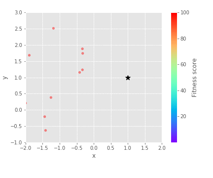
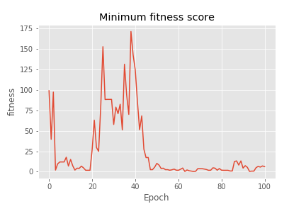
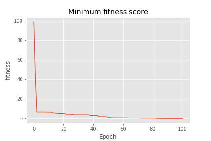

Cloning¶
In the elitist model ([DJ75]) the best individual is saved in each generation and in general significantly improves the performance of the GA ([Mit98]). The act of ‘saving’ an individual ensures that good genes are preserved so the GA doesn’t waste time locating them again. However, elitism improves local search at the expense of a global search ([DJ75]). Supposing that the protected individual is situated at a local optima, at each generation it will likely pass on its genetic material via crossover, so the population will progress towards the local optima it has located.
Demonstration¶
In this demonstration we will try to find the minimum of Rosenbrock's banana.
See also
We use a small population (population_size = 10) and we compare the performance without cloning and where we clone the best individual at each generation. We can see that without cloning, the best genes are often lost and have to be rediscovered making the search quite slow. When we clone the best individual, the cloned individual helps to direct the population towards the closest minimum. We can also see that the fitness score at each epoch improves.
sim = ga.ga(genes,
evaluate,
clone = 0,
mutate = 0.6,
sigma = 0.3,
population_size = 10)
sim.run_simulation(seed = 1)
|  | |
|  |  |
No cloning |
Cloning |
|
|